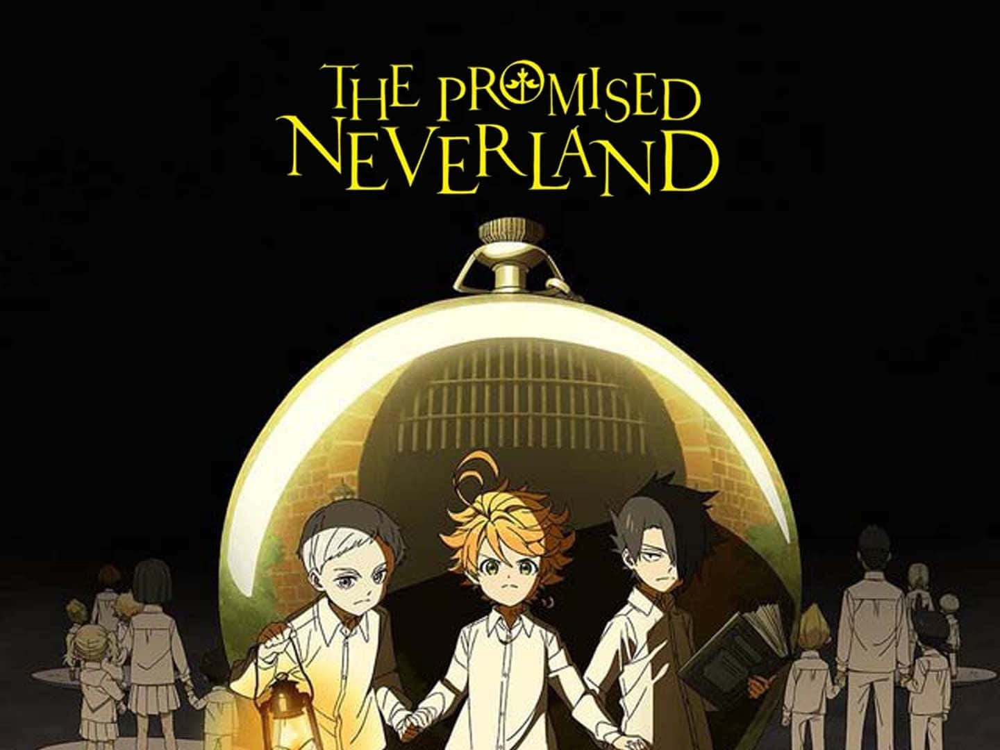

A história começa em Grace Field House, um orfanato aparentemente perfeito onde 38 crianças
vivem
sob os cuidados de uma mulher carinhosa que chamam de "Mãe" (Isabella).
Eles levam uma vida
idílica: comida boa, roupas brancas impecáveis,
testes de inteligência diários e muito
espaço
para brincar. A única regra absoluta é:
nunca ultrapassar o portão ou a floresta que
circunda a
propriedade.